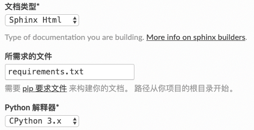

4. FAQ¶
4.1. 目录设置问题¶
为了方便基于目录的版本管理，我们可以将文档源文件和分离，可以在使用sphinx-quickstart时 设置source和build为不同目录。也可以后期在Makefile(Mac, Linux)或make.bat(Windows)文件进行设置。
例如，将：
SOURCEDIR = .
BUILDDIR = _build
改为
SOURCEDIR = .
BUILDDIR = ../writebysphinx_build
4.2. 为什么有些目录没更新？¶
由于sphinx是增量编译的，对于没有变化的文件是不会去重新编译处理，如果只是更新了根目录下的index.rst文件内容， 并且增加新的对应文件，可能会导致首页目录正常，有些老旧页面目录没有更新的情况。
处理办法：只要删除已经build的文件目录，重新生成一遍即可。
4.3. Read the Docs部分设置注意点¶
总体而言，readthedocs还是比较容易设置的，如果出错，也有明确的错误输出，根据其错误输出解决问题即可。 比如本sphinx工程用到了plantuml画图工具，网站提示plantuml没有安装，那么我们只要新增加一个文本文件 requirement.txt，放在根目录即可。其中requirement文件内容为:
sphinxcontrib-plantuml
graphvi
然后在网站上高级设置中填上这个文件名，它就会自动去安装了，如下图。
{kind=link}
另一个碰到的问题是编译警告出错，提示找不到content.rst，原因是readthedocs默认认为初始文件是content.rst， 只要在conf.py文件中增加一行配置，告知系统初始文件名（不用带后缀）即可。
master_doc = 'index'
4.4. 在Sphinx上使用Markdown¶
虽然不建议用Markdown写大型文档，但目前有大量现存Markdown写的文档，可以支持将其移植进来。
Sphinx支持用Markdown进行写作。
启用Markdown需要如下步骤：
安装recommonmark：:
pip install recommonmark
添加如下内容到conf.py中：:
source_parsers = {
'.md': 'recommonmark.parser.CommonMarkParser',
}
添加Markdown的文件扩展名到配置文件的source_suffix变量：:
source_suffix = ['.rst', '.md']